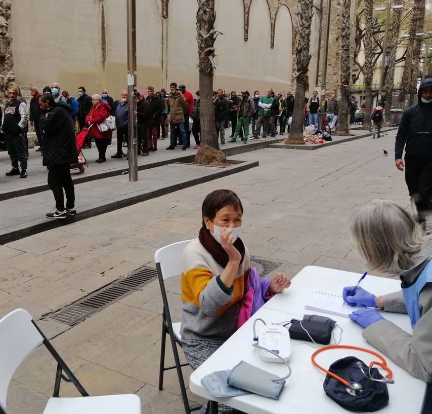

Vetllem per la salut de les persones vulnerables

Vetllem per la salut de les persones vulnerables
1. A partir del febrer del 2019, es va a organitzar campanyes trimestrals de dos dies de durada.
L'Hospital del Sagrat Cor desplaçava al claustre de la Parròquia de Santa Anna de Barcelona, un grup de professionals sanitaris voluntaris, de diferents especialitats.

2. Al març del 2019, es va començar a passar visita al claustre un matí i una tarda.
3. La pandèmia va a obligar a aturar l'activitat sanitària.
4. Al setembre de 2020 s'habilita una consulta fixe, amb una dotació mínima de material, a la sala capitular, on s'ofereix atenció sanitària de diferents especialitats (medicina de familia, medicina interna, dermatologia, odontologia, psicologia, podologia, optometria, infermeria), els dilluns al migdia, pels acollits de la parròquia o persones provinents d'altres entitats.
5. Al maig de 2021 es desplaça una dotació per fer una primera atenció sanitària a usuaris del menjador de Les Calcutes.
